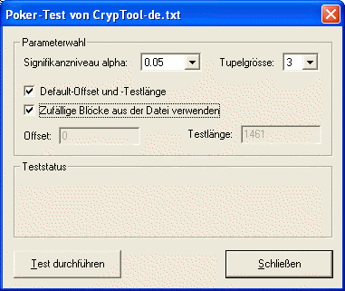
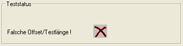
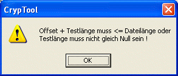
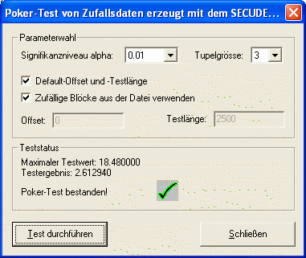
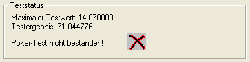

Diesen Dialog erreichen Sie über das Menü Analyse \ Zufallsanalyse \ Poker-Test.
Das Dialogfenster des Poker-Tests zeigt das folgende Bild:

In diesem Dialogfenster kann man verschiedene Parameter auswählen und bestimmen. Das Signifikanzniveau alpha kann zwischen 3 voreingestellten Werten ausgewählt werden: 0.01, 0.05 und 0.10.
Die Tupelgröße-Combobox erlaubt für den Poker-Test, die Anzahl der Elemente des Tupels einzustellen.
Mit der Checkbox Default-Offset und -Testlänge entscheidet man sich für die Default-Werte (Offset = 0 und Testlänge = Dateilänge). Alternativ können benutzerdefinierte Werte im Test benutzt werden.
Sind diese Werte falsch gewählt, erscheint im Dialog eine Nachricht:

und zusätzlich eine Messagebox:

Mit der Checkbox Zufällige Testblöcke verwenden kann man sich Zufallswerte für Offset und Testlänge erzeugen lassen. Hat der Benutzer Werte für Offset und Testlänge eingegeben und Zufällige Testblöcke verwenden angekreuzt, werden trotzdem die vom Benutzer definierten Werte für Offset und Testlänge benutzt.
Mit der Test durchführen-Taste führt man den Test durch.
Nach der Betätigung der Test durchführen-Taste sollte Ihr Dialogfenster so aussehen:

Der maximale Testwert ist ein statistischer Wert, der vom Signifikanzniveau abhängig ist und nicht überschritten wird, wenn der Test bestanden wird.
Das Testergebnis ist ein vom Test erzeugter statistischer Wert, der mit dem maximalen Testwert verglichen wird.
Wird der Test nicht bestanden, erscheint folgende Nachricht im Teststatus:

Mit Schließen verlässt man das Dialogfenster und kehrt zurück zum CrypTool-Hauptfenster.